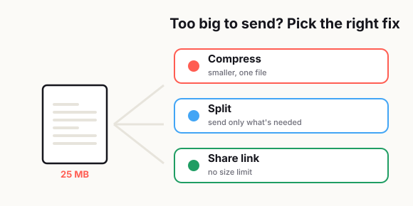

The Easiest Way to Send Large PDF Files Without Endless Back-and-Forth
There's always that one PDF that refuses to cooperate.

It's too big for email, too slow to upload, or too annoying for the person on the other end to open on their phone. Then the messages start piling up. "Can you resend it?" "The file won't open." "Do you have a smaller version?" "Can you send just the pages I need?" Somehow, a document that should have taken thirty seconds to share turns into a whole side quest.
If you work with invoices, proposals, reports, forms, contracts, school documents, manuals, portfolios, or scanned paperwork, you've probably dealt with this more than once. Large PDF delivery sounds like a tiny problem, but it creates real friction. It wastes time, makes you look disorganized, slows down approvals, and frustrates people who already have too many things to deal with.
The good news is that sending a large PDF doesn't have to be complicated. Most of the back-and-forth happens because people use the same method for every file, even when the file clearly needs a different approach. Sometimes you should compress it. Sometimes you should split it. Sometimes the smartest move is to stop emailing the attachment altogether and send a link instead.
Once you know how to choose the right option, the whole process gets easier. Your files go through faster, people stop asking you to resend things, and you spend less time acting like unpaid tech support for your own document.
Some of the heaviest PDF users I supported were engineering teams putting tenders together. A single tender could run to hundreds of pages and mix every paper size you can think of — A4 and A3 alongside A1 and A0, because the drawings are so big. With all those high-resolution drawings inside, the files regularly pushed past a gigabyte. Handling, compressing and actually getting a file that size to a client was a real daily challenge — and a good reminder that "large" means very different things depending on who you work with.
— Hill, 20 years in IT supportWhy large PDF delivery keeps failing
The first problem is simple: many PDFs are much bigger than they need to be.
A lot of files become oversized because they include high-resolution images, full-color scanned pages, embedded fonts, duplicated assets, unnecessary pages, or exports from design software that were never optimized for sharing. On your laptop, the file may seem fine. But once you try sending it through email, opening it on mobile data, or sharing it with someone using an older device, all the hidden weight starts to matter.
Another issue is that people assume "PDF" means universal compatibility. That's only half true. PDF is a common format, but the experience still depends on file size, device speed, internet quality, storage space, browser support, and whatever app the other person is using to open it. A PDF can technically work and still be annoying enough that the other person gives up.
That's where the back-and-forth begins. The file may be valid, but the delivery method is wrong for the situation.
A 25 MB PDF might be acceptable inside a company drive, but not ideal for a client checking email on a phone in an airport. A scanned 60-page packet may be fine for internal storage, but terrible for someone who only needs page three and page four. If your delivery method creates friction, the recipient usually won't explain the technical problem in detail. They'll just reply with some version of "Can you send it another way?"
Email limits people forget about
Email is still the default way people send documents, which is exactly why it causes so many avoidable problems.
Most people don't think about attachment limits until a message fails. By then, they've already written the email, attached the file, hit send, and assumed the job was done. But even when an email platform allows large attachments, the other side may have stricter limits, slower sync, or security filters that block the file.
And size isn't the only issue.
A PDF that barely sneaks through email can still be painful to download. On mobile, big attachments feel heavier than they do on desktop. People may be on limited data, weak Wi-Fi, or older devices with little storage. If opening your file feels like work, that creates delay, and delay creates more messages.
There's also a professionalism issue here. When someone has to ask you for a smaller version, it subtly tells them that you didn't think through the recipient's experience. That may sound small, but small points of friction add up, especially when you're sending documents to clients, leads, partners, or people who are already busy.
So before emailing a PDF, ask one basic question: is email really the best delivery method for this file?
If the answer is "maybe," then it's worth choosing more carefully.
Compress, split, or share a link: how to choose
This is where most people overcomplicate things. You do not need a fancy workflow for every document. You just need a simple way to decide what kind of file-sharing problem you actually have.
Option 1: Compress the PDF
Compressing is the best choice when the document needs to stay as one file, and the current size is the main problem.
This works well for reports, brochures, guides, handouts, and signed documents where the recipient should receive the whole thing in one piece. If the file is just a little too large for convenient sending, compression is usually the fastest fix.
The mistake people make is compressing too aggressively. Yes, the file becomes smaller, but the text gets fuzzy, images turn muddy, and the final result looks cheap. If the PDF includes contracts, invoices, application forms, architectural drawings, or anything people may need to zoom into, readability matters more than shaving off every possible megabyte.
A good rule is this: reduce the file enough to make delivery easy, but not so much that it looks broken.
Option 2: Split the PDF
Splitting makes more sense when the document is long, but the recipient does not need the whole thing at once.
This is useful for scanned records, portfolios, case files, onboarding packets, training manuals, or multi-section reports. If the real problem is not just size but relevance, sending the full PDF is unnecessary. Breaking it into smaller, clearly named parts often solves both issues at the same time.
For example, instead of sending one 48-page PDF, you might send:
proposal-summary.pdfpricing-pages.pdfappendix.pdf
That immediately reduces confusion. It also helps non-technical users find what they need without digging through a huge document.
The only catch is that you need clear file names. Sending three files called document-final.pdf, document-final2.pdf, and document-latest.pdf is a great way to create a different kind of chaos.
Option 3: Share a link
Sometimes the best way to send a large PDF is not to send the file itself.
If the PDF is very large, frequently updated, or intended for multiple people, a shared link is often the cleanest option. It avoids email size problems, reduces duplicate attachments, and makes it easier to replace the file later without sending five corrected versions.
This is especially useful when:
- The file is too large for comfortable email delivery.
- The recipient may open it from different devices.
- More than one person needs access.
- You expect future edits or replacements.
- You want one source of truth instead of multiple copies floating around.
A link also feels cleaner in professional communication. Instead of stuffing a message with a giant attachment, you can give the recipient one simple path to the file.
That said, links only work well when permissions are clear. If the recipient clicks and sees "request access," your smooth workflow instantly becomes another delay. The easier you make access, the better the experience.
Best format for clients, teams, and non-technical users
Not every audience needs the same delivery style.
This is one of the most overlooked parts of document sharing. People often focus on what is easiest for themselves instead of what is easiest for the person receiving the file. That's how simple tasks become annoying.
For clients
Clients usually want the least confusing option.
They may not care how cleverly you compressed the PDF. They just want to open it quickly, review it, and move on. For most client-facing situations, the best approach is either:
- a reasonably compressed single PDF, or
- a clean shared link with obvious access.
If the document has multiple sections, tell them exactly what they're getting. Don't make them guess whether the proposal, pricing, and terms are all inside one attachment. A short note like "This PDF includes the proposal, timeline, and pricing in one file" removes uncertainty right away.
For internal teams
Teams are usually more flexible, especially if they already use shared drives, chat tools, or project platforms.
In that case, a link is often better than email because it prevents version confusion. The whole team can reference the same file, and you won't end up with three slightly different attachments in three different threads.
For repeat workflows, storing the PDF in a consistent folder structure also saves time. The less people have to ask where the latest version lives, the better.
For non-technical users
This group deserves the most attention.
Non-technical users are not difficult. They're just less interested in troubleshooting your file choices. If opening the document requires too many steps, they may stop and ask for help even when the problem is minor.
For this audience:
- Keep the file size modest.
- Use a clear file name.
- Avoid sending too many separate attachments unless necessary.
- Include one short sentence explaining what to click.
Something like "Open the file named tax-form-pages-1-5.pdf first" is often more helpful than a paragraph of technical explanation.
Convenience matters more than cleverness.
How to keep quality while making delivery easier
This is where people usually make the wrong trade-off.
They assume the only way to make a PDF easier to send is to crush the quality. That's not true. A lot of the time, you can improve delivery without making the file look bad. You just need to be intentional about what the document is for.
Start by asking what the recipient actually needs to do with the file.
Do they just need to read it once on a phone? Do they need to print it? Zoom in on detailed diagrams? Sign it? Archive it? Share it with others? The answer changes how aggressively you should optimize the file.
Here are a few practical ways to keep quality where it matters:
Keep text sharp
If the document is mostly text, clarity matters more than image perfection. Make sure the file still looks clean when zoomed in. Blurry text makes a document feel low quality fast.
Reduce unnecessary image weight
Many PDFs are oversized because of oversized images. If the document includes photos, screenshots, or scanned pages, those visuals may be carrying way more data than the recipient actually needs. Reducing image weight strategically often gives you a better size drop than flattening the whole file blindly.
Remove pages nobody needs
Sometimes the best optimization is subtraction.
If the appendix, cover sheet, duplicate scan, or blank page is not necessary for delivery, cut it. Smaller file, less clutter, better experience. That's a much cleaner fix than over-compressing everything.
Match the file to the purpose
A print-ready PDF and a share-by-email PDF do not have to be the same version. This is one of the easiest habits to adopt, and it solves a lot of recurring frustration.
You can keep:
- one high-quality master version
- one lighter share version
That way, you are not constantly editing the same file for two different jobs.
A smart delivery workflow for repeat use
If you deal with PDFs often, the real goal is not just solving one file problem. It's building a repeatable workflow so you stop dealing with the same headaches over and over.
A simple system works better than a perfect system you never use.
Here's a practical workflow that keeps things organized:
Step 1: Keep a master file
Always save the original high-quality version separately. This protects you from over-compressing, accidental edits, or needing to rebuild the document later.
Step 2: Create a delivery version
Make a second version specifically for sending. This is the file you compress, rename, split, or upload. That one small habit removes a lot of risk.
Step 3: Choose the delivery method on purpose
Before sending, decide:
- Should this be one compressed file?
- Should this be split into sections?
- Should this be a share link instead of an attachment?
That decision should depend on file size, audience, and task, not just habit.
Step 4: Name the file clearly
File names matter more than people think.
Use names that tell the recipient exactly what the document is, such as:
client-proposal-june-2026.pdfemployee-handbook-mobile-version.pdfapplication-pages-1-10.pdf
Clear naming reduces follow-up questions and makes your workflow look more professional.
Step 5: Test the experience once
Before sending, open the file the way a normal recipient would. Try it on mobile if that matters. Download it from the shared link. Make sure permissions work. Check whether it opens quickly and looks clean.
This takes one minute and prevents ten minutes of unnecessary messages.
Step 6: Reuse what works
Once you find a good pattern for delivery, keep it.
Maybe your best setup is:
- under a certain size, email the PDF directly
- longer files, split into sections
- huge files, send a link
- client documents, always include a one-line explanation
- internal files, always store and share from one folder
That kind of repeatable system saves more time than any single compression trick.
The easiest way is usually the clearest way
A compressed file is helpful when size is the issue. A split file is helpful when relevance is the issue. A shared link is helpful when access and flexibility are the issue. The right method depends on the job.
A while back, a colleague in Hong Kong was in a hurry to email a PDF to a client, but the file was over our mail system's attachment limit, so every attempt just bounced straight back. He was stressed and came over to ask what to do. It's such a common situation — people finish a file and try to push it straight into email, without ever thinking about the size limits on the receiving end or the mail server in between. I compressed it back under the limit and it went through fine. Ever since, I've told colleagues the same thing: before you send a big file, stop for a second and think about whether the other side can actually receive it.
— Hill, 20 years in IT supportRelated reading: When the real problem is size, learn how to compress a PDF without ruining quality; if you're combining files first, see how to merge PDFs without making a mess.
Frequently asked
What is the best way to send a large PDF file?
The best method depends on the file and the recipient. If the PDF is only slightly too large, compress it. If the recipient only needs part of the document, split it into smaller files. If the file is very large or needs to stay updated, sharing a link is usually the easiest option.
Should I compress a PDF before emailing it?
Yes, if the file is larger than necessary and still needs to be sent as one attachment. Just avoid over-compressing it, because that can make text blurry and images hard to read.
Is it better to split a PDF or send the whole file?
Split the PDF when the document is long and the recipient only needs certain pages or sections. Sending smaller, clearly labeled files often reduces confusion and makes downloading easier.
Why do large PDF files cause so much back-and-forth?
Large PDFs often create problems with email limits, slow downloads, mobile access, storage space, and unclear file organization. When the file is inconvenient to receive or open, people usually ask for another version.
How can I keep PDF quality while making the file easier to send?
Keep a high-quality master copy, then create a separate delivery version. Reduce unnecessary image weight, remove extra pages, and optimize the file based on whether the recipient needs to read it, print it, or sign it.